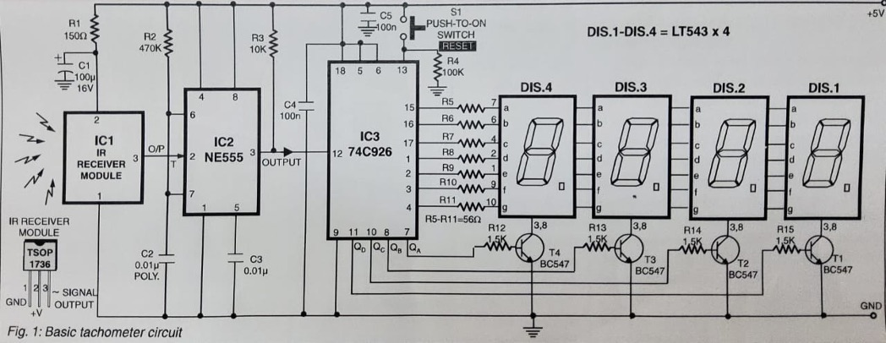
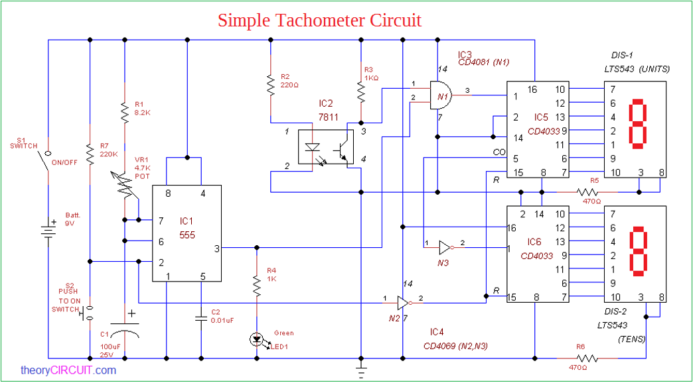

Digital Tachometer using Infrared Rotation Sensing

The Challenge
Tachometers are critical tools in automation and mechanics, used to accurately measure the rotational speed (RPM) of machinery and motors. The primary objective of this project was to construct a purely hardware-based digital tachometer utilizing infrared (IR) technology. A secondary, real-world challenge was navigating severe local component shortages, requiring rapid on-the-fly architectural adaptations to maintain the logic pipeline based on reference schematics.
Our Solution / Methodology
Rather than reinventing standard logic, we researched and evaluated multiple reference circuit diagrams to select the most robust multi-stage logic circuit. We then implemented this schematic to process analog inputs into digital pulses:
- Signal Acquisition: An IR LED emits a 36 kHz modulated light. As a motor shaft rotates, a contrasting stripe reflects the IR light back to a TSOP1736 IR receiver module, generating a low-output trigger signal.
- Pulse Generation: The low signal triggers a NE555 Monostable Multivibrator. The 555 timer is configured based on reference calculations to generate highly precise timing pulses, acting as the primary measurement window for the system.
- Logic Counting & Display: The timed pulses are fed into a 74C926 4-Digit Counter IC. This IC processes the pulses and converts them into a Binary-Coded Decimal (BCD) format, directly driving a Common Anode 7-Segment Display to visually represent the rotation speed.
Engineering Resilience & Component Alternatives
During the prototyping phase, the primary 74C926 counter IC and the TSOP1736 module became locally unavailable, and software simulator libraries (like Multisim) lacked exact equivalents. To ensure project success, we demonstrated engineering adaptability by researching and theoretically validating alternative architectures.
Alternative Logic Implementation
We sourced a secondary schematic utilizing a CD4026 (a 5-stage Johnson decade counter with 7-segment decoder) and a CD4511 (BCD to 7-segment latch/decoder). This required re-evaluating the logic gates, specifically implementing a CD4081 AND gate to synchronize the IR optocoupler pulses with the 555 timer's 1-second window.

Conclusion & Impact
This project provided profound, hands-on experience with schematic reading, low-level digital logic execution, signal processing, and sensor integration. More importantly, it highlighted the realities of hardware engineering—where adapting to component constraints, reading complex datasheets for alternative ICs, and executing existing circuit designs accurately are just as critical as the initial theoretical concepts.